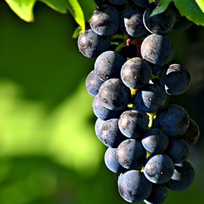
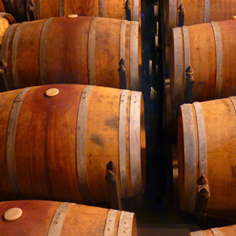
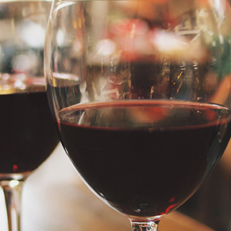

Every bottle is filled
with stories
From the vine to the wine
Premium
On your left you'll see the theme maker, which will act as your personal design consultant as you create your website. Each theme is made up of fonts, backgrounds, colors and more. Choose from one of the color palettes and pick a theme you like from the list. There are four variations of each theme (A, B, C, and D) and you can edit each section individually as you go along.
High-quality
On your left you'll see the theme maker, which will act as your personal design consultant as you create your website. Each theme is made up of fonts, backgrounds, colors and more. Choose from one of the color palettes and pick a theme you like from the list. There are four variations of each theme (A, B, C, and D) and you can edit each section individually as you go along.
Unique
On your left you'll see the theme maker, which will act as your personal design consultant as you create your website. Each theme is made up of fonts, backgrounds, colors and more. Choose from one of the color palettes and pick a theme you like from the list. There are four variations of each theme (A, B, C, and D) and you can edit each section individually as you go along.
Behind the scenes
Behind the scenes
Pick me! I'm here to help you add content to your website and make it reflect the message you want to get across. Am I a description? Information about your company? A heart-wrenching story or inspirational quote? Are you unsure right now and might want to change your mind later? That's okay! Feel free to type whatever comes to mind and edit me at your convenience.
Behind the scenes
Pick me! I'm here to help you add content to your website and make it reflect the message you want to get across. Am I a description? Information about your company? A heart-wrenching story or inspirational quote? Are you unsure right now and might want to change your mind later? That's okay! Feel free to type whatever comes to mind and edit me at your convenience.
Let us tell you what our secret is for the perfect glass of wine.

Best grapes
Want to add your own creative touch? Make your own theme! You have many tools to play around with, like colors schemes, icons, fonts, images, and backgrounds.

Perfect process
Want to add your own creative touch? Make your own theme! You have many tools to play around with, like colors schemes, icons, fonts, images, and backgrounds.

Fabulous experience
Want to add your own creative touch? Make your own theme! You have many tools to play around with, like colors schemes, icons, fonts, images, and backgrounds.